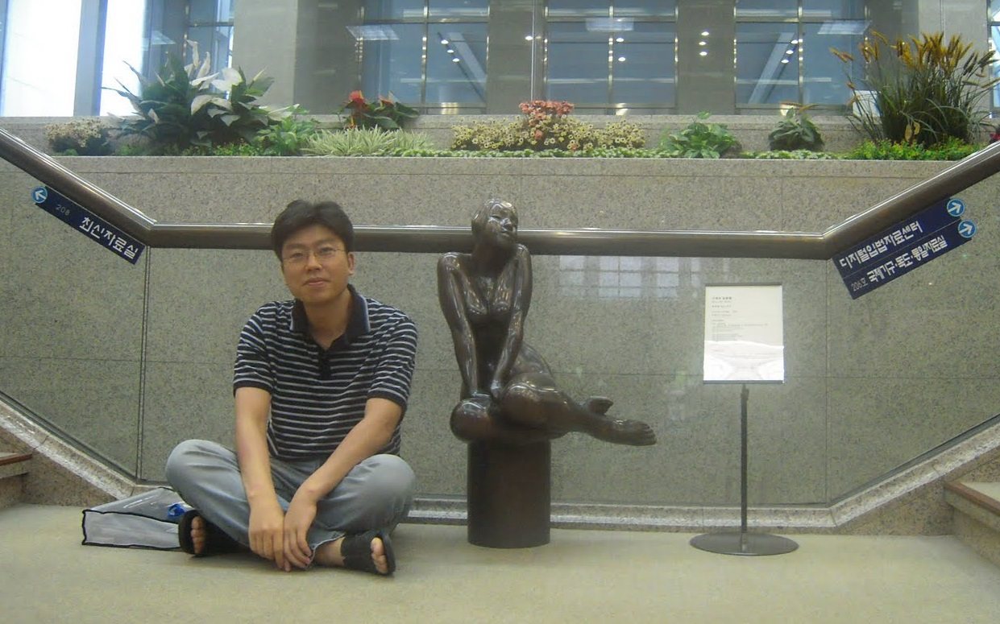

|

|
Kwanghoon Choi
Associate Professor (September 2016 - )
Software Languages and Systems Laboratory
Dept. of Software Engineering
Chonnam National University
77 Yongbong-ro, Buk-gu, Gwangju, 61186, Korea
Email: kwanghoon.choiXjnu.ac.kr (where X is @)
Tel: {+82,0} 62-530-3421
Fax: {+82,0} 62-530-3439
Office: No.442, Engineering Building 7
|
"Types are the central organizing principle of the theory of programming languages." -Robert Harper
|
|
"If you don't understand interpreters, you can still write programs; you can even be a competent programmer. But you can't be a master."
-Hal Abelson
|
|
"The design of computing systems can only properly succeed if it is well grounded in theory, and the important concepts in a theory can only emerge through protracted exposure to application." - Robin Milner
|
|
[In Korean]
|
|